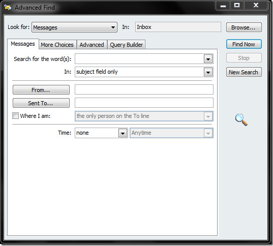
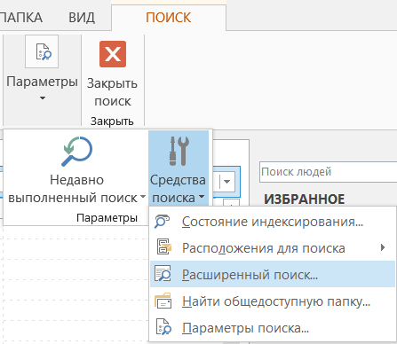
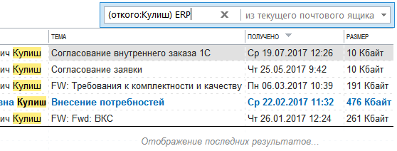

|
Строка поиска в Microsoft Outlook 2013 очень неинформативна. Это просто строка, в которой, по мнению неподготовленных пользователей, просто пишется слово и фраза, которую надо найти в письмах. Проблема в том, что такой поиск не может быть точным - находится слишком много писем.
В более старых версиях Outlook поиск осуществлялся из специального окна, в котором можно было настроить критерии поиска:

Найти его было несложно, но дизайнеры интерфейса Microsoft Outlook 2013 решили спрятать его куда подальше. Теперь оно скрывается за кнопкой, расположенной так: вкладка "Поиск", выпадающий список "Параметры" (опционально), выпадающий список "Средства поиска", пункт "Расширенный поиск". Причем, это меню появится только после того, как пользователь поставит курсор в строку поиска:

Согласен, выглядит жутко. Вместо этого кнопкотыканья вызвать окно поиска можно и с клавиатуры, путем нажатия Ctrl+Shift+F.
Однако в Microsoft Outlook 2013 есть встроенный язык запросов, который работает непосредственно в строке поиска:

Синтаксис поискового запроса, в общем виде, имеет простую форму:
[ключевоеслово:]критерий_поиска ОПЕРАТОР [ключевоеслово:]критерий_поиска
Где критерий поиска - это либо одно слово, либо строка, заключенная в кавычки, либо критерий, написанный в специальном синтаксисе.
Для уточнения критериев поиска можно использовать логические операторы И, НЕ, ИЛИ, <, >, = и т. д , что отмечено в нижеприведенной таблице. Логические операторы должны обязательно вводиться прописными (т. е. большими) буквами.
В запросах можно использовать круглые скобки ( ) для группировки условий и для определения границ условий. Указывать границы условий нужно в том случае, если запись с кавычками приводит к точному поиску фразы, а нужно найти слова в любом порядке. Другими словами, нижеприведенные запросы работают по-разному:
(откого:Вася Иванов) кукарямба
- запрос найдет письма от Васи Иванова и Иванова Васи, в которых будет слово "кукарямба". Причем, Иванов Вася будет найден не потому, что в поле "от кого" есть и "Вася" и "Иванов", а потому, что в поле "от кого" есть "Вася", а "Иванов" встречается в каком-то (любом) поле письма, в данном случае - в поле "от кого".
откого:"Вася Иванов" кукарямба
- запрос найдет письма только от Васи Иванова, в которых будет слово "кукарямба".
Вот сама таблица с синтаксисом запросов Outlook:
|
Запрос |
Результаты |
|
ivan |
Элементы, содержащие ivan, IVAN, IvAn или любое другое сочетание строчных и прописных букв. Мгновенный поиск работает без учета регистра. |
|
ivan voronkov |
Элементы, содержащие оба слова (ivan и voronkov), но не обязательно в указанном порядке.
По-умолчанию считается, что если вводить слова через пробел, то на самом деле между ними будет логический оператор И. |
|
ivan И voronkov |
Элементы, содержащие оба слова (ivan и voronkov), но не обязательно в указанном порядке. Обратите внимание: логические операторы, такие как И, НЕ и ИЛИ, следует вводить прописными буквами. |
|
ivan НЕ voronkov |
Элементы, содержащие ivan, но не voronkov. |
|
ivan ИЛИ voronkov |
Элементы, содержащие ivan, voronkov или оба слова. |
|
"ivan voronkov" |
Элементы, содержащие точную фразу ivan voronkov. Обратите внимание на использование двойных кавычек: результаты поиска будут точно соответствовать фразе в кавычках. |
|
откого:"ivan voronkov" |
Элементы, отправленные пользователем ivan voronkov. Обратите внимание на использование двойных кавычек: результаты поиска будут точно соответствовать фразе в кавычках. |
|
откого:"ivan voronkov" содержимое:"отчет о состоянии" |
Элементы, отправленные пользователем ivan voronkov и содержащие фразу отчет о состоянии в строке темы, тексте письма или вложениях. Обратите внимание на использование двойных кавычек: результаты поиска будут точно соответствовать фразе в кавычках. |
|
свложениями:да |
Элементы, имеющие вложения. Те же результаты можно получить, используя запрос "свложениями:истина". |
|
вложение:презентация.pptx |
Элементы, имеющие вложения с именем презентация.pptx или вложения, которые содержат фразу презентация.pptx. |
|
тема:"ivan voronkov" |
Элементы, в теме которых содержится фраза ivan voronkov. |
|
тема:ivan voronkov |
Элементы, которые содержат слово ivan в строке темы и слово voronkov в любом другом месте. |
|
копия:ivan voronkov |
Элементы, которые содержат отображаемое имя ivan voronkov в строке "Копия". |
|
копия:ivanvoronkov@contoso.com |
Элементы, содержащие адрес электронной почты ivanvoronkov@contoso.com в строке "Копия". |
|
ск:ivan |
Элементы, содержащие имя ivan в строке "СК". |
|
размерсообщения|размером|сразмером:<10 КБ |
Элементы, размер которых меньше 10 КБ. Обратите внимание на использование оператора сравнения "меньше" (<). |
|
размерсообщения|размером|сразмером:>5 МБ |
Элементы, размер которых превышает 5 МБ. Обратите внимание на использование оператора сравнения "больше" (>). |
|
получено:=01.01.2006 |
Элементы, полученные 01.01.2006 г. Обратите внимание на использование оператора сравнения "равно" (=). |
|
получено:вчера |
Элементы, полученные вчера. Функция "Мгновенный поиск" также распознает следующие значения дат:
- Относительные даты: например, сегодня, завтра, вчера;
- Относительные даты из нескольких слов: например, эта неделя, следующий месяц, прошлая неделя, прошлый месяц, следующий год;
- Дни: понедельник, вторник... воскресенье;
- Месяцы: январь, февраль... декабрь.
|
|
получено:прошлая неделя |
Элементы, полученные на прошлой неделе. Обратите внимание: если выполнить этот запрос еще раз через месяц, результаты будут другими, так как используется относительное значение времени. |
|
срок:прошлая неделя |
Элементы, помеченные к исполнению с датой выполнения на прошлой неделе. |
|
размерсообщения|размером|сразмером:крошечные |
Элементы, размер которых меньше 10 КБ. |
|
размерсообщения|размером|сразмером:маленькие |
Элементы, размер которых составляет от 10 до 25 КБ. |
|
размерсообщения|размером|сразмером:средние |
Элементы, размер которых составляет от 25 до 100 КБ. |
|
размерсообщения|размером|сразмером:большие |
Элементы, размер которых составляет от 100 до 500 КБ. |
|
размерсообщения|размером|сразмером:очень большие |
Элементы, размер которых составляет от 500 КБ до 1 МБ. |
|
отметкакисполнению:к исполнению |
Элементы, помеченные к исполнению. |
|
размерсообщения|размером|сразмером:гигантские |
Элементы, размер которых превышает 5 МБ. |
|
отметкакисполнению:истина |
Элементы, помеченные к исполнению. |
|
откого:ivan (получено: 07.01.2005 ИЛИ получено: 08.01.2005) |
Элементы, полученные от пользователя ivan 07.01.2005 г. или 08.01.2005 г. Обратите внимание на использование скобок для группировки дат. |
|
получено:>=01.10.2006 И получено:<=05.10.2006 |
Элементы, полученные с 01.10.2006 по 05.10.2006. |
|
получено:>01.10.2006 И получено:<05.10.2006 |
Элементы, полученные позже 01.10.2006, но раньше 05.10.2006. |
|
отправлено:вчера |
Элементы, отправленные вами вчера. |
|
имяполучателя:ivan |
Элементы, которые вы отправили пользователю ivan (если поиск выполняется в папке Отправленные). |
|
прочитано:нет |
Элементы, которые не были прочитаны. Те же результаты можно получить, используя запрос "прочитано:ложь". |
|
тема:состояние получено:май |
Элементы, полученные от любых пользователей в мае (любого года) и содержащие слово состояние в строке темы. |
|
начало:на следующей неделе тема:состояние |
Элементы календаря, относящиеся к следующей неделе и содержащие слово состояние в строке темы. |
|
повторяется:да |
Повторяющиеся элементы календаря. |
|
организатор:ivan |
Элементы календаря, для которых организатором является ivan. |
|
категории:бизнес |
Элементы, которые относятся к категории Бизнес. |
|
имяконтактноголица:ivan |
Контакты, которые содержат слово ivan в поле "Имя". |
|
фамилияконтактноголица:voronkov |
Контакты, которые содержат слово voronkov в поле "Фамилия". |
|
псевдоним:ivan |
Контакты, которые содержат слово ivan в поле "Псевдоним". |
|
должность:терапевт |
Контакты, которые содержат слово терапевт в поле "Должность". |
|
пейджер:555-01-00 |
Контакты, которые содержат 555-01-00 в поле "Пейджер". |
|
работа,телефон:555-01-00 |
Контакты, которые содержат 555-01-00 в поле "Служебный телефон". |
|
дом,телефон:555-01-00 |
Контакты, которые содержат 555-01-00 в поле "Домашний телефон". |
|
мобильныйтелефон:555-01-00 |
Контакты, которые содержат 555-01-00 в поле "Мобильный телефон". |
|
автомобиль,телефон:555-01-00 |
Контакты, которые содержат 555-01-00 в поле "Телефон в машине". |
|
работа,факс:555-01-00 |
Контакты, которые содержат 555-01-00 в поле "Факс". |
|
дом,факс:555-01-00 |
Контакты, которые содержат 555-01-00 в поле "Факс дом." |
|
работа,адрес:(ул. Вишневая, д. 345, Воронеж, Россия, 123456) |
Контакты, которые содержат адрес ул. Вишневая, д. 345, Воронеж, Россия, 123456 в поле "Рабочий адрес". Обратите внимание на то, что адрес заключен в скобки. |
|
дом,адрес:(ул. Вишневая, д. 345, Воронеж, Россия, 123456) |
Контакты, которые содержат адрес ул. Вишневая, д. 345, Воронеж, Россия, 123456 в поле "Домашний адрес". Обратите внимание на то, что адрес заключен в скобки. |
|
работа,город:воронеж |
Контакты, которые содержат слово воронеж в поле "Город (раб. адрес)". |
|
работа,индекс:123456 |
Контакты, которые содержат 123456 в поле "Индекс (раб. адрес)". |
|
улица:(ул. Вишневая, д. 345) |
Контакты, которые содержат строку "ул. Вишневая, д. 345" в поле "Улица (раб. адрес)". Обратите внимание на то, что адрес заключен в скобки. |
|
дом,улица:(ул. Вишневая, д. 345) |
Контакты, которые содержат строку "ул. Вишневая, д. 345" в поле "Улица (дом. адрес)". Обратите внимание на то, что адрес заключен в скобки. |
|
деньрождения:04.06.1960 |
Контакты, которые содержат 04.06.1960 в поле "День рождения". |
|
веб-страница:www.contoso.com |
Контакты, которые содержат URL-адрес www.contoso.com в поле "Веб-страница". |
|